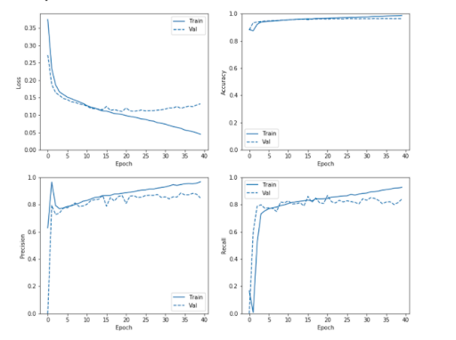
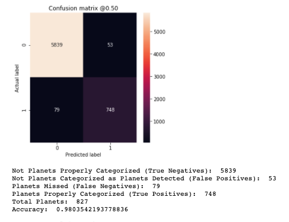

The W2P model is an attempt to conduct exoplanet classification solely from processed light curves, without further features that are available in various other Kepler catalogs. The W2P model relies in part on earlier work in the Astronet model by Shallue and Vandenberg, with some further inspiration from Firmino. It primarily uses a one dimensional convolutional deep learning model to classify the 34,032 threshold crossing events (TCEs) from the Kepler Data Release 25 Planet Candidate Catalog (DR25) into two groups: planets (4,197) and no-planets (29,835).
For more information and materials on the model and data pipeline development, see the github repository here.
We utilized the koi_disposition data field from the NASA Exoplanet Archive as the ground truth label for each TCE, binarizing them into planet/no-planet. These labels are the result of human vetting of many different features and prior validation models.
We downloaded the light curves for each TCE from the Mikulski Archive. There is a well established processing pipeline for light curves that simplifies the creation of appropriate input training data (again relying in part on code bases from Shallue and Firmino). This pipeline removes distortion from other known TCEs in the same system, flattens the curves by removing trend and low-frequency variability, and overlays multiple transits from the same candidate on top of one another. This processing step is storage and compute intensive and is a challenge to parallelize, making it the most resource-intensive part of the model development and the creation of our ExoDiscovery data repository.
The result of that pipeline are ‘global’ and ‘local’ light curves. Two examples below - one a confirmed planet and the other not. These two TCEs are quite different to the naked eye and thus their respective classifications seem reasonably straightforward.
Four hundred thirty eight of the 34,032 TCEs have light curves that fail in the processing pipeline for different reasons. All of these have ‘no-planet’ labels, simplifying their exclusion. Thus the training data set is 33,594 global and local light curve representations. We proceeded to split the data into training (80%) and validation (20%) sets.
We experimented with various model structures, including simple fully connected models, one dimensional convolutional models, LSTM models, and combined CNN/LSTM models. After experimentation, we ultimately settled on a reasonably straightforward one dimensional convolutional model and used the Keras/Tensor Flow framework as our model building technology.
Our model architecture had two distinct input branches, one for each of the global and local light curves. Both had a sequence of convolution and pooling layers, though the structure of each was different between the global and local views. The outputs of the convolutional branches were then flattened and combined before being fed through a sequence of dense layers (with dropout utilized) prior to a simple sigmoid classification layer. The preprocessing pipeline scales the data so no additional data scaling/normalization was required.
Model training was not hugely resource intensive given that each TCE had a global vector of length 2001 and a local vector of length 201 and our model had approximately ten million trainable parameters. On an EC2 instance (g4dn.4xlarge) with one NVIDIA T4 GPU, model training took only five to ten minutes. We also used the Keras Tuner framework to optimize model structure and hyperparameters using a Bayesian search technique. This would typically require a few hours of processing time.
The model converges quite quickly using normal learning rates but additional accuracy was gained by exploring smaller learning rates. Early stopping was used extensively to moderate over-fitting. Notably the W2P model is shallower than the Astronet model, but with slightly better accuracy. This is likely a result of being able to train with significantly more data as we were able to utilize the DR25 Planet Candidate Catalog, which is almost double the size of the DR24 release used by Shallue and Vandenberg.
Simply predicting that a TCE is not a planet would give you a baseline accuracy rate of 87.7%. Thus there are approximately twelve points of accuracy available to be captured by a model. Our model has validation accuracy of 98.0%, which compares favorably to the prior state of the art of 96.0%.
Three each of the most ‘true’ members of the four classes - false positives, false negatives, true positives, true negatives - are presented below based on probability differences.